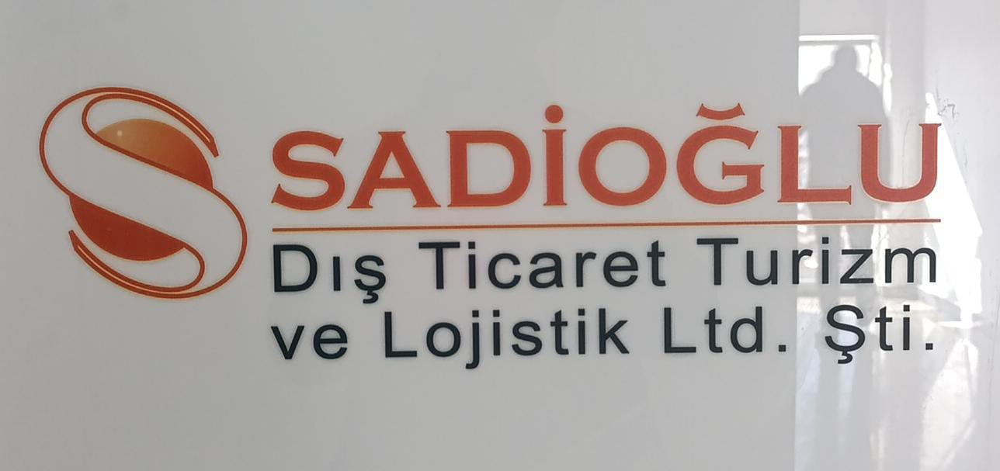
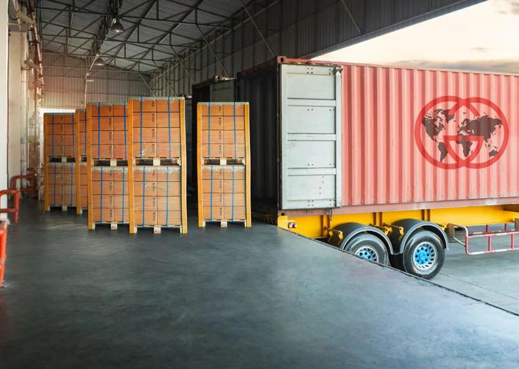
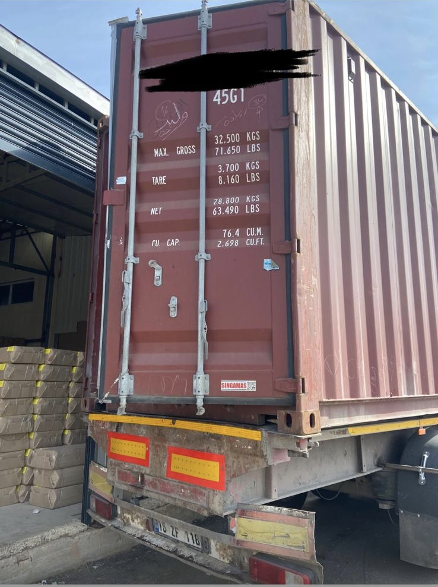
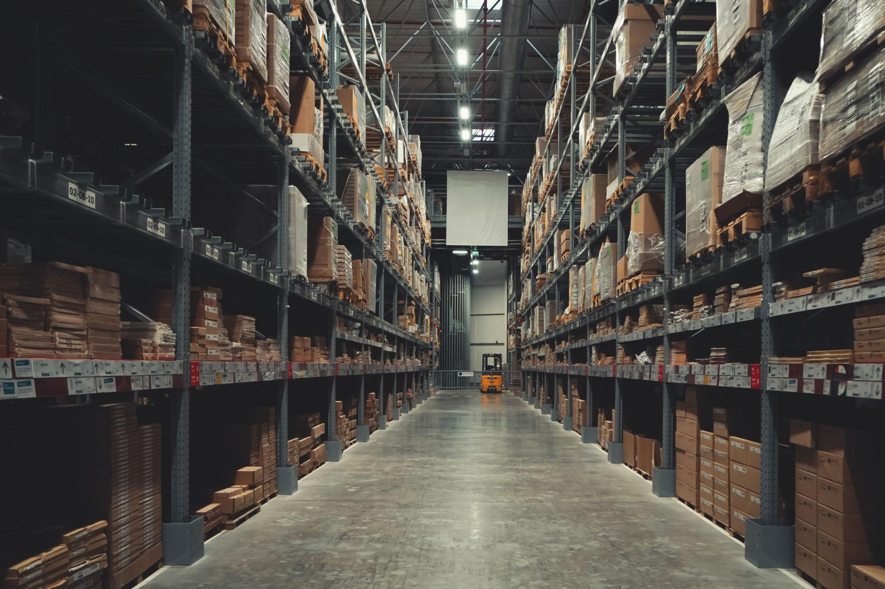
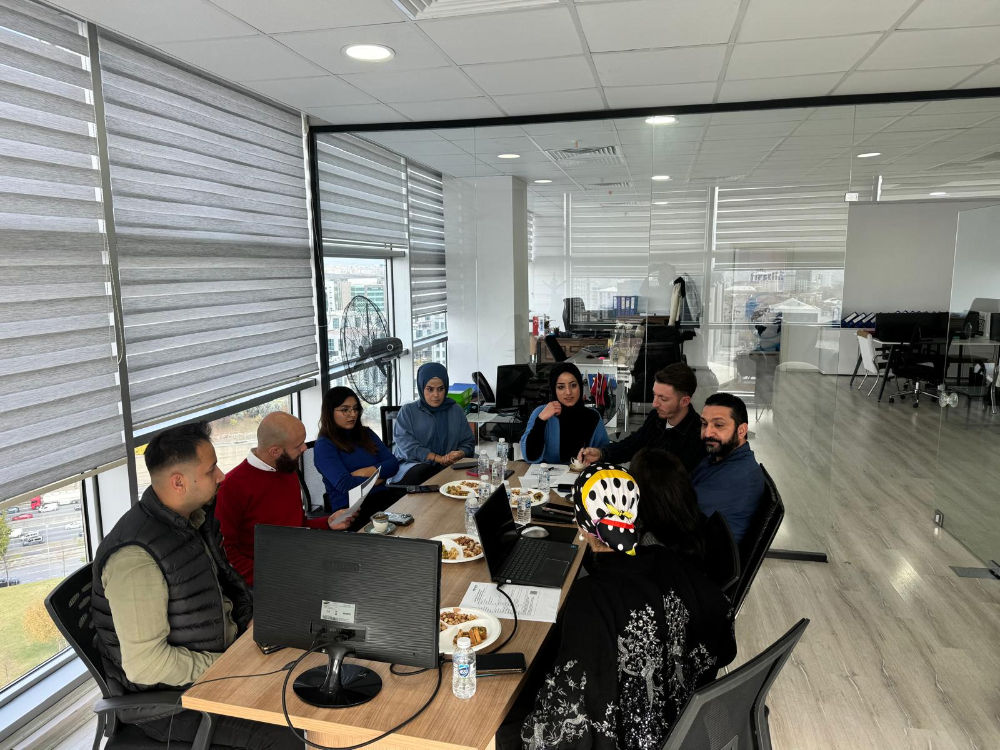
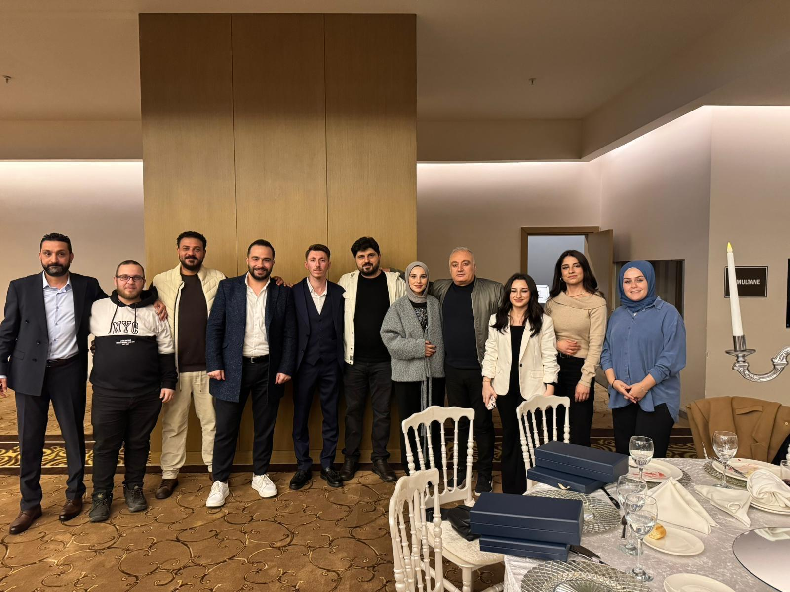

Türkiye genelindeki üretici ve tedarikçileri Libya’daki alıcılarla buluşturarak, güvenilir, hızlı ve profesyonel dış ticaret çözümleri sunuyoruz.
SADİOĞLU DIŞ TİCARET, Türkiye ile Libya arasında güçlü ve sürdürülebilir bir ticaret köprüsü kurmak amacıyla faaliyet göstermektedir. Libya’daki iş ortaklarımızın ihtiyaç duyduğu ürünleri Türkiye genelindeki güvenilir üretici ve tedarikçilerden temin ederek, uçtan uca çözümler sunmaktayız.
Firmamız; doğru ürün, doğru tedarikçi ve doğru lojistik planlamayı bir araya getirerek müşterilerine güvenli, hızlı ve şeffaf bir ticaret süreci sağlar. Türkiye’deki üreticileri Libyalı alıcılarla buluştururken, her iki taraf için de uzun vadeli ve kazançlı iş birlikleri oluşturmayı hedefler.
Sektörel tecrübemiz ve geniş tedarikçi ağımız sayesinde, farklı sektörlerdeki talepleri etkin şekilde karşılayarak uluslararası ticarette güvenilir bir çözüm ortağı olarak konumlanmaktayız.
Türkiye ile Libya arasındaki ticaret hacmini artıran, güvenilirliği ve profesyonelliği ile öne çıkan, bölgesinde lider ve tercih edilen bir dış ticaret firması olmak. Uluslararası pazarda güçlü iş birlikleri kurarak sürdürülebilir büyüme sağlamak ve müşterilerimize her zaman katma değer sunan çözümler geliştirmek.
Libyalı iş ortaklarımızın ihtiyaçlarını doğru analiz ederek, Türkiye’nin güçlü üretim kapasitesi ile buluşturmak; hızlı, güvenilir ve şeffaf ticaret süreçleri sunmak. Müşteri memnuniyetini ön planda tutarak, kaliteli ürün ve hizmetleri zamanında ve sorunsuz şekilde ulaştırmak temel misyonumuzdur.
Türkiye genelindeki güvenilir üretici ve tedarikçiler ile ihtiyaçlarınıza en uygun ürünleri eşleştiriyoruz.
Ürünlerin tedarik sürecinden sevkiyata kadar tüm ihracat operasyonlarını profesyonel şekilde yönetiyoruz.
Ürünlerin güvenli ve zamanında Libya’ya ulaştırılması için etkin lojistik çözümler sunuyoruz.
Uluslararası ticaret süreçlerinde doğru kararlar almanız için uzman danışmanlık hizmeti sağlıyoruz.
Operasyon süreçlerimiz; ürün seçimi, tedarik, kalite kontrol, paketleme ve lojistik planlama adımlarını kapsar. Türkiye’deki üreticilerden temin edilen ürünler, titizlikle kontrol edilerek uluslararası standartlara uygun şekilde hazırlanır ve Libya’daki müşterilerimize güvenli şekilde ulaştırılır.



Alanında deneyimli ve uluslararası ticaret süreçlerine hakim ekibimiz, müşteri taleplerini en doğru şekilde analiz ederek en uygun çözümleri sunar. Profesyonel yaklaşımımız ve güçlü iletişimimiz sayesinde, iş ortaklarımızla uzun vadeli ve güvene dayalı ilişkiler kurmaktayız.


📧 sadiogludisticaretturizm@gmail.com
📍 KEMALPAŞA MAH. 18 SEKBANLAR SK. NO:13
FATİH / İSTANBUL
We connect trusted Turkish manufacturers and suppliers with Libyan buyers, delivering reliable, fast, and professional foreign trade solutions.
SADİOĞLU FOREIGN TRADE operates with the goal of establishing a strong and sustainable trade bridge between Turkey and Libya. We provide end-to-end supply solutions by sourcing the products needed by our Libyan business partners from reliable manufacturers and suppliers across Turkey.
By combining the right product, the right supplier, and the right logistics planning, our company ensures a secure, fast, and transparent trade process. While bringing Turkish manufacturers together with Libyan buyers, we aim to create long-term and profitable business partnerships for both sides.
Thanks to our sectoral experience and extensive supplier network, we effectively respond to demands in different industries and position ourselves as a reliable solution partner in international trade.
To become a leading and preferred foreign trade company in the region by increasing the trade volume between Turkey and Libya, standing out with reliability and professionalism, and delivering value-added solutions to our customers through sustainable growth and strong international business partnerships.
To accurately understand the needs of our Libyan business partners and connect them with Turkey’s strong production capacity; to provide fast, reliable, and transparent trade processes; and to deliver quality products and services on time and without issues while always prioritizing customer satisfaction.
We identify and match your needs with reliable manufacturers and suppliers across Turkey.
We professionally manage the entire export process, from sourcing to shipment.
We provide efficient logistics solutions to ensure products are delivered to Libya safely and on time.
We offer expert consulting services to help you make the right decisions in international trade processes.
Our operational processes include product selection, sourcing, quality control, packaging, and logistics planning. Products sourced from manufacturers across Turkey are carefully inspected, prepared in line with international standards, and delivered safely to our customers in Libya.
Our experienced team, specialized in international trade processes, carefully analyzes customer demands and provides the most suitable solutions. With our professional approach and strong communication, we build long-term and trust-based relationships with our business partners.
نربط المصنعين والموردين الموثوقين في تركيا بالمشترين في ليبيا، ونقدم حلول تجارة خارجية سريعة وآمنة واحترافية.
تعمل شركة SADİOĞLU للتجارة الخارجية بهدف إنشاء جسر تجاري قوي ومستدام بين تركيا وليبيا. نحن نوفر حلولاً متكاملة من البداية إلى النهاية من خلال تأمين المنتجات التي يحتاجها شركاؤنا في ليبيا من المصنعين والموردين الموثوقين في مختلف أنحاء تركيا.
من خلال الجمع بين المنتج المناسب والمورد المناسب والتخطيط اللوجستي المناسب، نوفر لعملائنا عملية تجارية آمنة وسريعة وشفافة. كما نهدف إلى بناء شراكات تجارية طويلة الأمد ومربحة للطرفين عبر ربط المنتجين في تركيا بالمشترين في ليبيا.
وبفضل خبرتنا القطاعية وشبكة الموردين الواسعة، نستجيب بفعالية لاحتياجات مختلف القطاعات ونرسخ مكانتنا كشريك موثوق في مجال التجارة الدولية.
أن نكون شركة تجارة خارجية رائدة ومفضلة في المنطقة من خلال زيادة حجم التبادل التجاري بين تركيا وليبيا، والتميز بالموثوقية والاحترافية، وتقديم حلول ذات قيمة مضافة لعملائنا عبر شراكات دولية قوية ونمو مستدام.
فهم احتياجات شركائنا في ليبيا بدقة وربطها بالقوة الإنتاجية الكبيرة في تركيا، وتقديم عمليات تجارية سريعة وموثوقة وشفافة، مع ضمان تسليم المنتجات والخدمات عالية الجودة في الوقت المناسب ودون أي مشاكل، مع وضع رضا العملاء في المقام الأول.
نحدد الموردين والمصنعين الموثوقين في مختلف أنحاء تركيا ونربطهم باحتياجاتكم بشكل دقيق.
ندير جميع مراحل عملية التصدير باحترافية، من التوريد وحتى الشحن.
نقدم حلولاً لوجستية فعالة لضمان وصول المنتجات إلى ليبيا بأمان وفي الوقت المحدد.
نوفر خدمات استشارية متخصصة لمساعدتكم على اتخاذ القرارات الصحيحة في عمليات التجارة الدولية.
تشمل عملياتنا اختيار المنتجات، والتوريد، وفحص الجودة، والتغليف، والتخطيط اللوجستي. ويتم فحص المنتجات التي يتم تأمينها من المصنعين في تركيا بعناية، ثم تجهيزها وفقاً للمعايير الدولية، وتسليمها بأمان إلى عملائنا في ليبيا.
يتمتع فريقنا بخبرة واسعة ومعرفة عميقة بعمليات التجارة الدولية، حيث يقوم بتحليل احتياجات العملاء بدقة وتقديم الحلول الأنسب لهم. ومن خلال نهجنا المهني وتواصلنا القوي، نبني علاقات طويلة الأمد قائمة على الثقة مع شركائنا.